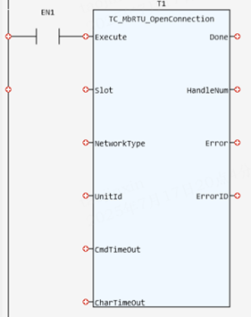

System Function.
Open a Modbus client connection.
|
Execute: BOOL; |
Rising edge requests execution |
|
Slot: INT; |
Slot number. Currently, the default value is -1. If it is not -1, an error will be reported |
|
NetworkType: TC_MODBUSRTU_TYPE; |
Communication network type, including tcRS232, tcRS485_2WIRE, tcRS485_4WIRE |
|
UnitId: USINT; |
Unit identifier byte used in request header |
|
CmdTimeOut: LINT; |
Timeout (ms) for executing functions |
|
CharTimeOut: LINT; |
Maximum time interval permitted between individual received characters or ability to transmit characters within a message before an error is triggered |
|
TRUE when function has completed normally |
|
|
HandleNum: DINT; |
Connection handle |
|
Error: BOOL; |
TRUE if a program error is detected |
|
ErrorID: UINT; |
Returned error number |
When the Execute input changes from FALSE to TRUE, the Function Block issues a command to open Modbus RTU client connection. ErrorID includes 781,790, 791 and 802, and the corresponding error descriptions are as follows.
|
ErrorID |
Description |
|
781 |
Slot error |
|
790 |
Timeout error |
|
791 |
Connection opening error |
|
802 |
UnitID error |
Inst_TC_MbRTU_OpenConnection(Execute:= (BOOL), Slot:= (INT), NetworkType:= (TC_MODBUSRTU_TYPE), UnitId:= (USINT), CmdTimeOut:= (LINT), CharTimeOut:= (LINT));
(BOOL):=Inst_TC_MbRTU_OpenConnection.Done;
(DINT):=Inst_TC_MbRTU_OpenConnection.HandleNum;
(BOOL):=Inst_TC_MbRTU_OpenConnection.Error;
(UINT):=Inst_TC_MbRTU_OpenConnection.ErrorID;

Not available.